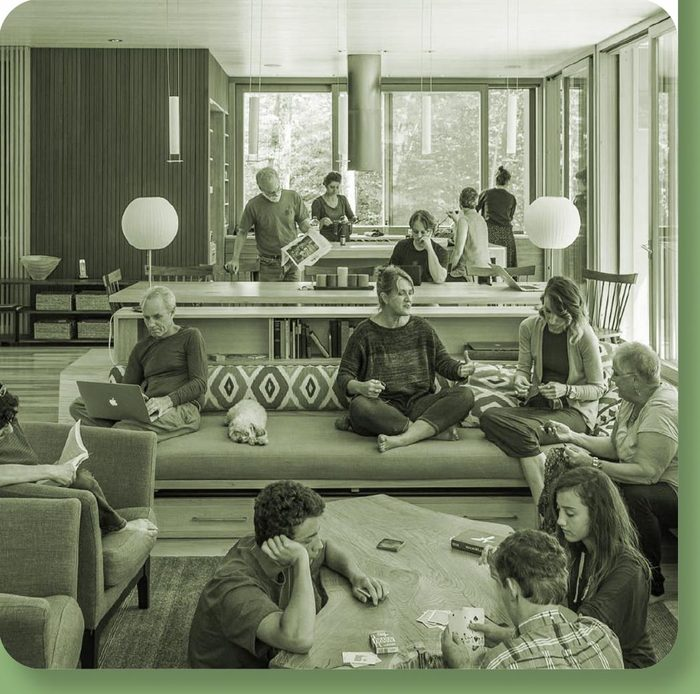
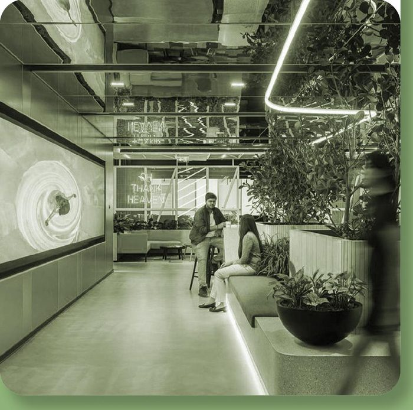
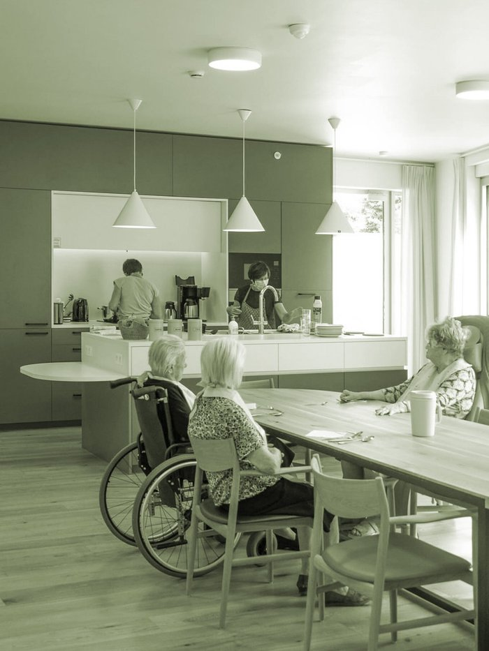

Spend a semester inStudent Residence  For students, researchers and workshop participants Semester-based stay close to learning and restoration programs Shared rooms, study areas, kitchen and common spaces Lectures, field trips, community dinners and local events
Become a resident ofDigital rural hub  For remote workers, freelancers and young entrepreneurs Temporary residence with access to work and meeting spaces Fast internet, coworking rooms, shared kitchen and local services Networking, public talks, project sessions and weekend activities
Join the community ofAssisted Living Cluster  For elderly residents and people seeking supported everyday life Independent living with access to care and shared facilities Accessible rooms, common kitchen, assistance and mobility support Social meals, local walks, workshops and intergenerational events